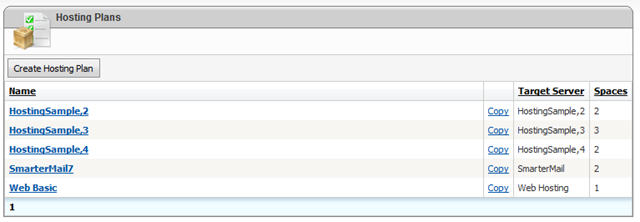
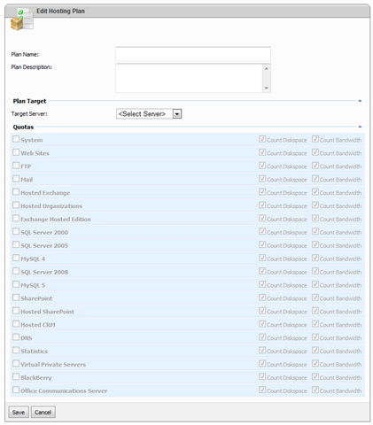
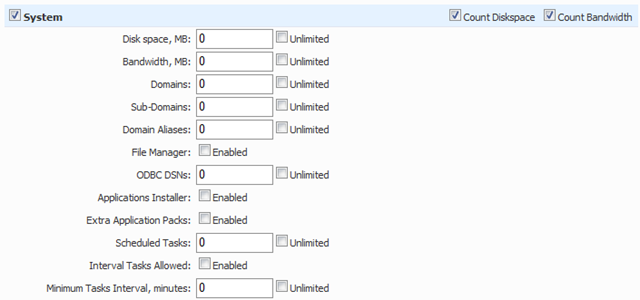
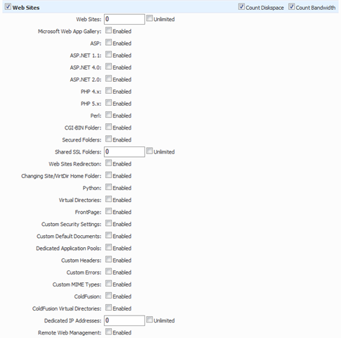
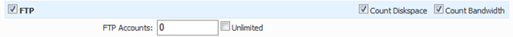
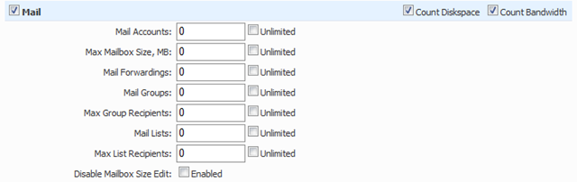
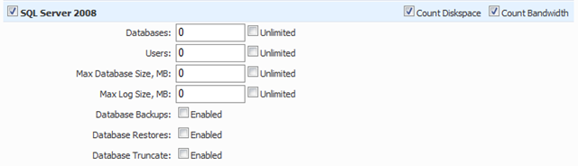
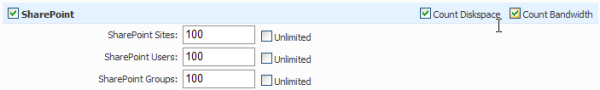
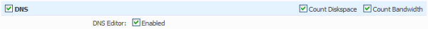
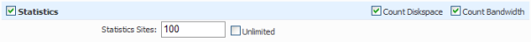

Creating Hosting Plans
Translations:
What is Hosting Plan?
Hosting plan is a set of hosting resources and their corresponding quotas. Hosting resources here are set of services located on a single server of several servers (combined into one entity by mean of “virtual server”). Hosting plan is used as a template for creating customer hosting spaces.
Creating Hosting Plan
To view the list of hosting plans of some reseller click "Hosting Plans" item on the left User Account Menu. The following screen will appear:

To add a new hosting plan click "Add Hosting Plan" button. You'll be redirected on "Hosting Plan Details" screen shown below:

General Settings
Name and Description
Specify the name and description of hosting plan and set its availability (visibility) to customers.
Plan Target
Plan target is the place where corresponding hosting space will be created. When editing hosting plan under administrator account ("serveradmin") only servers (both physical and virtual) can be selected as a target. When editing hosting plan under reseller account a hosting space only can be selected as a target.
Quotas
Enable required resource groups and specify their allowed quotas.
Check resource groups for which disk space and bandwidth should be calculated.
Some resources may be disabled if corresponding service does not exist on the selected target server or hosting space. For example if "System" resource is disabled that means you don't have "OS" service in the target server or "System" resource enabled in the parent hosting space.
System Resource

Tick "System" resource if you want to allow created hosting spaces work with files.
Please note, some other resources like WEB or FTP are dependent on "System" resource, so if it's not enabled you will not be able to create web sites or FTP accounts in the created hosting space under this hosting plan.
Specify allowed "disk space" and "bandwidth/month" quotas.
Sometimes it's undesirable to allow customers accessing files within the space. In this case you can disable "File Manager" option and it will be hidden from their spaces.
Web Sites Resource

Tick "Web Sites" resource if you want to allow customers to create web sites.
Specify the maximum number of allowed web sites, number of allowed shared SSL folders (virtual directories).
Check/uncheck other web resource options.
FTP Resource

Tick "FTP" resource if you want to allow customers to create FTP accounts.
Specify the maximum number of allowed FTP accounts.
Mail Resource

Tick "Mail" resource if you want to allow customers to create mail accounts, forwardings, groups and lists.
Specify the maximum number of mail accounts, forwardings, groups and lists.
Also, you may limit the number of allowed recipients for mail groups and lists.
"Max Mailbox Size" quota allows to limit mail account size growth. Please note, not all mail servers support this feature.
SQL Server 2000, 2005 and 2008 Resources

Tick "SQL Server x" resource if you want to allow customers to create SQL Server databases and user accounts.
Specify the maximum number of allowed databases and database user accounts.
Allow/disallow database backups, restores and truncates.
Database truncate is a service feature that truncates database log file (.LDF), thus decreasing the overall size of disk space occupied by database.
If "Max Database Size" quota is limited SQL Server database will be created with the specified limited size growth (if set to "unlimited" databases are created with "unrestricted growth" option).
MySQL 4 and 5 Resources
[screenshot]
Tick "MySQL x" resource if you want to allow customers to create MySQL databases and user accounts.
Specify the maximum number of allowed databases and database user accounts.
Allow/disallow database backups.
SharePoint Resource

Tick "SharePoint" resource if you want to allow customers to create SharePoint Services 2.0 web sites, user accounts and groups.
SharePoint resource is dependent on "System", "Web" and "SQL Server x" resources, so they also should be enabled if you are going to host SharePoint portals.
Specify the maximum number of SharePoint sites, users and groups that can be created in derived hosting space.
DNS Resource

Tick "DNS" resource if you want WSP to create corresponding DNS zone for each new domain.
Please note, if DNS resource is disabled you will still be able to add domains into WSP, but corresponding DNS zones will not be created.
You may enable/disable DNS editor. However, even if DNS editor was disabled, administrators still have an access to it.
Statistics Resource

Tick "Statistics" resource if you want to allow customers to create advanced statistics sites (AWStats, SmarterStats, etc.).
Specify the maximum number of allowed statistics sites.
Other Resources - TBD
Hosted Exchange
Hosted Organizations
Exchange Hosting Mode
Hosted SharePoint
Hosted CRM
Virtual Private Servers
BlackBerry
Office Communications Server